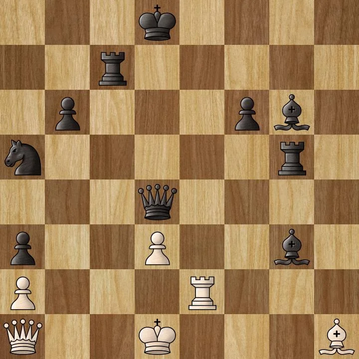

What a forgotten 1831 painting of a chess match against Satan reveals about the psychology of every bargain we make against our own interest — in courtship, in institutions, and inside our own heads.
"Two souls, alas, are dwelling in my breast." — Goethe, Faust
In 1831, in a studio overlooking the Elbe, a Dresden academy professor named Moritz Retzsch finished a small oil painting of a chess match. On the left, wrapped in a scarlet cloak crowned with a cock's feather, sits the Devil — relaxed, smirking, one hand hoarding a captured piece, the other pointing at his opponent's king. On the right, a young man in blue and white slumps forward, head in hand, staring at a board he believes he has already lost. Between them, a guardian angel stands with her hands folded, watching, saying nothing.
Retzsch titled it Die Schachspieler — The Chess Players. English and American publishers, distributing engravings of it through the 1830s, renamed it Checkmate. That renaming is itself the first clue to everything this article is about: the difference between what is actually true on the board and what we have already decided is true in our heads.
Because here is the detail that turns a minor Romantic painting into one of the most quietly profound psychological documents of the 19th century: the young man is not in checkmate. Chess historians have spent nearly two centuries analyzing the position Retzsch painted, and the consensus — famously associated with the American chess prodigy Paul Morphy — is that a defensive resource remains on the board. The game is not over. It only feels over.
The board is never the trap. The trap is believing the board is already lost.
That gap — between the objective position and the subjective collapse — is the subject of this piece. It runs through Goethe's Faust, through the clinical literature on narcissistic extraction and self-erasure in relationships, through the neuroscience of threat perception, and through the very old philosophical problem of how a person keeps their head when the room has been engineered to make them lose it. The painting turns out to be a diagram of all of it — a single frozen moment that, looked at closely enough, contains a theology, a chess puzzle, a clinical case study, and an escape route, all sitting quietly on top of the same forty square inches of canvas.
The seven-part arc this article follows — from a single 1831 canvas outward to a general theory of composure under pressure.
Part I — The Painting
1. Die Schachspieler: Retzsch, Dresden, and the Making of an Allegory
Friedrich August Moritz Retzsch was born in Dresden in 1779 and never really left it. He trained at the Dresden Academy of Fine Arts under Cajetan Toscani and Józef Grassi, taught himself as much as he was taught by copying Raphael in the local gallery, and was made a full professor there in 1824. He would likely be a footnote in German Romanticism if not for one commission: in 1818, the publisher Cotta hired him to produce twenty-six engraved outline plates illustrating Goethe's Faust. Goethe himself reviewed and praised the set. The commission made Retzsch internationally famous and financially independent for the rest of his life.
The Chess Players, painted in 1831, was not a commission. It was an original work — but one that could not have existed without the decade Retzsch had just spent inside Goethe's imagination, translating a story about a scholar who bargains his soul away into a visual vocabulary of gesture, shadow, and symbol. By the time he set up a board on a stone tomb and put a smirk on the Devil's face, he had already spent years learning exactly how to draw temptation.
He was not, by any surviving record, an initiate of any esoteric order himself. But Dresden in this period was a hub of Masonic and Rosicrucian-adjacent intellectual life, and Retzsch's own account of his working method — obsessive, mathematically precise underdrawing before a single layer of paint went down — suggests a mind that treated allegory the way an engineer treats load-bearing structure. Nothing in the composition is decorative. Every object carries weight.
2. The Sarcophagus Table and the Crypt
The board does not rest on a card table. It rests on the lid of a stone sarcophagus, inside a vaulted, Gothic, subterranean hall. Two carved gargoyles crouch on the pillars above the players, gazing down at the match like demonic overseers. This is not incidental staging — it is the entire stakes of the game made literal. The players are not competing for money, or status, or a woman. They are playing on top of a grave, for the ownership of what happens after the grave.
The scene has an obvious relationship to the Masonic "Chamber of Reflection" — the small, symbol-laden room in which a candidate for initiation is made to sit alone with a skull and an hourglass before being admitted to the lodge, so that the ego is stripped of its vanity before it is allowed to reason clearly. Whether or not Retzsch intended the reference specifically, the function is the same: the young man cannot think straight about the board because he has not yet metabolized the fact of the tomb underneath it.
Read psychologically rather than theologically, the crypt is doing something more universal. Romantic allegory routinely used enclosed, vaulted stone chambers as a figure for the interior of the skull. The entire scene can be read not as an event happening in a room, but as a picture of what is happening inside one person's head — an internal court in which the case for and against him is being argued in the dark, watched over by an idealized part of himself that cannot speak on his behalf.
3. The Chromatic Code: Scarlet vs. Blue-White
Color in this painting is not decoration; it is argument. Satan is wrapped in heavy, voluminous scarlet wool that pools on the floor and physically crowds the visual field. In 19th-century Romantic color theory — the same theory Goethe himself wrote a treatise on, explicitly rejecting Newton's purely mathematical account of light — red is the color of the Stofftrieb: the sensuous, material, appetitive drive. It is passion, aggression, and consuming physical need given a garment.
The young man wears royal blue and unadorned white, the classical colors of fidelity, truth, and spiritual aspiration. His clothing is tailored, restrained, civilized — and, crucially, fragile. Where Satan's cloak dominates space, the youth's velvet and silk look permeable, easily torn. The contrast is not simply good versus evil. It is unchecked material appetite crowding out a still-forming, still-vulnerable capacity for restraint.
The angel, by contrast, wears seamless, unadorned white linen — weightless, without ornament, outside the whole economy of fabric-as-status that governs the other two figures. She is dressed, in other words, as someone who has already exited the game the two men are still playing.
4. The Pieces as Souls: A Full Reading of Miltitz's Key
When engravings of the painting circulated through Europe and America in the 1830s, they came with an explanatory pamphlet written by Retzsch's friend Carl Borromäus von Miltitz, later adapted into English. It is the closest thing to an artist's statement the painting has, and it assigns a specific moral identity to every sculpted figure on the board.
Satan's king is the Devil himself. His queen is Pleasure — a voluptuous, sensual figure pressing forward as the most active attacking piece. His bishops are Falsehood, hiding a dagger behind a hand pressed to the heart, and Pride, strutting with a peacock's tail. His knights are Avarice and Envy, gnawing at their own hands while clutching gold, and Unbelief, a horned figure trampling a cross. His rooks are Indolence, rendered as a heavy swine. His pawns are Doubts — small, bat-winged, sharp-toothed creatures.
The young man's king is his own Psyche, crowned not with a coronet but with butterfly wings — the Greek psyche meaning, simultaneously, soul and butterfly, a small but exact piece of etymology doing the heaviest symbolic lifting in the whole composition. His queen is Religion, or Faith, the most powerful defensive piece on the board. His bishops are Peace and Humility; his knights, Innocence and Charity; his rooks, Hope and Truth. His pawns are Prayers, rendered as cherub heads lifted in worship.
Satan has already captured Humility, Innocence, and Peace, and is in the act of removing another piece as the scene is frozen. The young man has captured only Anger and a single Doubt. On raw material count, it looks like a rout. It is not — a distinction the next several chapters take seriously.
The two armies as defined in Carl von Miltitz's 1836 explanatory key. Note what Satan has actually captured — and what he hasn't.
5. Three Faces: Predatory Triumph, Aporia, and Sorrowful Restraint
Retzsch was, above all, a draughtsman — a master of the contour line, trained in the tradition of John Flaxman's outline engravings, and his gift was legibility of expression without exaggeration. The three faces in this painting carry the entire emotional argument.
Satan's eyes are sharp and hooded, cutting sideways with the focus of someone several moves ahead. His mouth carries a subtle, contemptuous smirk. There is no anger in his face, which is itself the point — anger would imply he sees the young man as a threat. What he shows instead is the amused, settled satisfaction of a predator who believes the outcome is already decided.
The young man's brow is furrowed, his eyes cast down and shadowed, his hand pressed to his temple in the exact gesture Albrecht Dürer gave to the winged figure in Melencolia I three centuries earlier — the classical Western image of intellectual paralysis under the crushing weight of consciousness. The ancient Greeks had a word for this precise state: aporia, a genuine impasse, the mind seizing at the threshold of a decision it does not know how to make. He has not resigned. He is stuck.
The angel's face carries no judgment of either player. Her eyes are turned down toward the youth, not toward Satan — she is not confronting the adversary, only witnessing the human cost of the confrontation. Her expression is grief without despair: total compassion, held inside total restraint, because the terms of free will forbid her from moving a single piece on his behalf.
6. Sinister and Dexter: The Heraldic Geometry of the Composition
Classical heraldry assigns moral weight to spatial position: the viewer's left is the sinister side, historically associated with deception and the shadow; the viewer's right is the dexter side, associated with conscience and legitimate authority. Retzsch places Satan precisely on the sinister axis and the youth precisely on the dexter axis, with the dividing line running straight down the center of the board and directly through the angel's heart.
This is not subtle symbolism smuggled in for scholars — it is a compositional rule any trained eye of the period would have registered instinctively, the same way a modern viewer reads left-to-right narrative sequencing without thinking about it. Retzsch is using an inherited visual grammar to stage a moral geography before a single piece has even been described.
7. The Golden Chain and the Gilded Rot
Two small material details do a great deal of quiet work. First: a delicate gold chain rests across the young man's shoulders, over his blue tunic — in Romantic portraiture, a conventional marker of youthful pride and attachment to worldly status, the exact vulnerability that let the adversary into the room in the first place. Second: the table itself. Its legs are carved into swirling, ornate Rococo gold brackets — gilded, decorative, luxurious — supporting a cold grey stone sarcophagus lid. The glittering craftsmanship is not the foundation; it is the disguise sitting on top of the foundation. Strip away the gold leaf and what is actually holding the game up is a tomb.
8. Checkmate vs. Die Schachspieler: How a Title Rewrote the Painting
Retzsch's own title, Die Schachspieler — The Chess Players — describes a process: two people, mid-decision, still playing. When Victorian publishers reissued the engraving in Britain and America, they retitled it Checkmate. That single word converts an open, ongoing contest into a stated, finished outcome, before the viewer has looked at a single square.
This is worth taking seriously as more than a marketing choice. Structuralist and post-structuralist thought — Jacques Lacan's account of how a name forecloses the field of meaning available to a thing, Jacques Derrida's argument that naming conditions what can subsequently be thought about the thing named — gives a precise vocabulary for what happened here. The retitling performed a small act of interpretive violence on the painting. It told nearly two centuries of viewers what to conclude before they had done any of their own looking. Which is, not coincidentally, exactly the strategy the Devil is using against the young man inside the frame.
In everyday terms: calling something by a name that already contains the verdict makes it much harder for anyone to look past that name and check the verdict themselves. "Checkmate" doesn't describe the painting — it tells you how to feel about the painting before you've even seen it, and most people, understandably, never bother to check the label against the actual position.
Part II — The Board State
9. The Position Is Not Lost: Paul Morphy in Richmond
The most famous anecdote attached to this painting takes place not in Dresden but in Richmond, Virginia, in the fall of 1861. Paul Morphy — by then regarded as the strongest chess player alive, having spent 1858 touring Europe and dismantling the continent's reigning masters — was dining at the home of the Reverend R. R. Harrison, who owned an engraving of Retzsch's painting. Harrison remarked that the young man was clearly facing an unavoidable checkmate.
According to the version of the story preserved by 19th-century chess writers and later forensically examined by the historian Edward Winter, Morphy studied the board in silence, then said something to the effect of: set up the pieces — I'll take the young man's side. He proceeded to demonstrate a counter-attack that broke what everyone else in the room had accepted, without examination, as a foregone conclusion.
Chess historians continue to debate how literally the anecdote should be trusted — Retzsch was not a strong player, and reconstructing an exact legal position from a two-dimensional painting is notoriously imprecise. But the story has survived for a reason that has nothing to do with whether it is forensically airtight. It is a perfect, compact demonstration of the entire thesis of this article: the room full of educated adults looked at the painting and saw an ending. One person, trained to ignore theater and read only the position, saw a game still in progress.
10. Overextension: How the Devil's Attack Exposes Itself
In chess tactics, a rapid, heavy-piece assault that fails to coordinate with a solid supporting structure is called overextension — and it is exactly what Satan's position shows. He has thrown his attacking pieces forward to strip the youth of peripheral virtues (Humility, Innocence, Peace), spending several tempi on captures that look devastating but leave his own back rank thin. The youth's major defenders — Faith, the queen; Truth and Hope, the rooks — remain undeveloped but intact, sitting in reserve exactly where a counter-attack would need them.
This is the recurring shape of manipulation generally: an assault that is loud, fast, and visually total, purchased at the cost of a structural weakness the aggressor is counting on nobody calm enough to notice.
The theatrical layer Satan projects, set against the mathematical layer the pieces actually describe.
A concrete, worked example helps make this less abstract. Take a reconstructed board state consistent with the kind of position chess historians have tried to derive from the painting — Black (Satan) has thrown forward two rooks, two bishops, a knight, and a queen, and stripped White (the youth) down to a lone queen, one rook, one bishop, and two pawns:

On material alone, White looks finished — down a rook, a bishop, and a knight. But look at the a1–d4 diagonal.
By raw piece count this looks like precisely the kind of rout the young man believes he is facing: White is down a full rook, a bishop, and a knight, with Black's queen sitting aggressively in the center of the board on d4. Anyone scanning the position the way the young man is scanning his own — tallying losses, reading the opponent's most advanced piece as proof of dominance — would conclude the game is effectively over.
It isn't. White's queen, sitting on a1, and Black's queen, sitting on d4, occupy the same open diagonal — a1, b2, c3, d4 — and nothing stands between them. Qa1xd4 is a fully legal move, and nothing recaptures: Black's queen is simply hanging. One move erases the entire material deficit at a stroke, converting a position that looked catastrophic into one that is, materially, dead even or better.
The reason a piece this valuable can be left this exposed is the same reason Satan's attack overextends in the painting itself: an assault built entirely around forward pressure has no attention left over for its own rear guard. Every one of Black's pieces in this position is committed to the attack — rooks advanced, bishops advanced, the knight pushed to the rim, the queen thrust into the center — and in the rush to finish the young man off quickly, nobody checked whether the queen's own diagonal was covered. Speed was the method and speed was the vulnerability; the position needed to look overwhelming faster than it needed to actually be sound.
That rush is also precisely what keeps the young man from finding the move. A player under sustained pressure — captures mounting, a clock (real or psychological) ticking, an opponent radiating certainty — searches for the safest available response, not the best one. The instinct under threat is defense: shore up the king, minimize further losses, survive the next exchange. Spotting Qxd4 requires doing the opposite of what panic recommends: ignoring the material already lost, ignoring the pieces still bearing down, and scanning the board for what the attacker left undefended in his hurry — a search that only works if it is unhurried, which is the one thing an intimidated player rarely feels permission to be.
The allegory does not need much translation at this point. Satan does not actually have a sound position; he has a fast one, and he is counting on the young man mistaking speed and volume for soundness. Every virtue captured, every piece thrown forward, every second of manufactured urgency is doing double duty — it advances the attack, and it makes the position harder to audit calmly enough to find the flaw in it. The queen left hanging on d4 is not a mistake in the ordinary sense. It is the cost of choosing intimidation over care, paid by an adversary who is gambling that no one under this much pressure will ever slow down enough to notice.
11. Learned Helplessness and the Psychology of Premature Surrender
Martin Seligman and Steven Maier's classic research on learned helplessness showed that organisms exposed to inescapable adverse conditions will, later, stop attempting to escape even when escape becomes available — because the earlier experience taught them that effort is futile, and that lesson outlives the conditions that produced it. The English retitling of Retzsch's painting to Checkmate functions as a cultural-scale version of the same mechanism: two centuries of viewers were handed the conclusion before they were handed the board, and most simply accepted it.
Inside the frame, the youth shows the identical signature. He is not calculating a losing position; he has stopped calculating altogether. Under acute, sustained pressure from a dominant-seeming adversary, the mind tends to over-index on the opponent's apparent control and quietly stop searching for the counter-move that is, in fact, still there.
12. Attentional Tunneling and the Spider on the Table
Along the lower edge of the sarcophagus, easy to miss on a first pass, a spider creeps toward the young man — a conventional emblem of patient, unnoticed entrapment. He does not see it, because his entire visual and cognitive field is locked onto the pieces directly in front of him. This is a fair description of what acute stress does to perception: elevated cortisol and norepinephrine sharply narrow attentional bandwidth around the most salient apparent threat, at the expense of picking up on subtler, peripheral developments — a psychological finding sometimes described through the "cue-utilization hypothesis," the observation that as arousal increases, the range of cues an organism can attend to shrinks. The spider is a small, exact illustration of what gets missed while all available attention is spent staring down the pieces already lost.
13. Morphy's Own Checkmate: The Pride and Sorrow of Chess
The cruelest detail in this whole story is what happened to the man who solved the painting. Morphy retired from competitive chess at twenty-two, tried to build a law practice in New Orleans, and failed. Over the following two decades he developed severe, untreated paranoia — convinced his food was poisoned, that barbers meant to kill him, that invisible enemies tracked his movements. He spent his final years wandering the French Quarter, by most accounts talking to people who were not there, and died alone at forty-seven. Chess historians call him, with some justice, "the pride and sorrow of chess."
The irony writes itself, but it is worth sitting with rather than rushing past: the one man capable of looking at a fixed, finite, 64-square board and seeing straight through the adversary's theater to the true position became, off the board, exactly the young man in the painting — frozen, convinced of an ending that had not actually arrived, with no visible opponent left to out-calculate.
Part III — The Devil's Psychology
14. The Faustian Bargain: From the 1587 Chapbook to Goethe
The literary bargain-with-the-devil long predates Goethe. The earliest printed version, the anonymous 1587 German Historia von D. Johann Fausten, has Faust's very first request after signing his contract be a wife — he wants ordinary companionship. Mephistopheles refuses outright: marriage is a sacrament, and sacraments are exactly what the pact forbids him. In its place, the devil offers courtesans, illusions, and a phantom conjuring of Helen of Troy. Even in the oldest version of the story, the trade is not simply knowledge for a soul. It is authentic connection for its counterfeit.
Christopher Marlowe's 1592 Doctor Faustus sharpens the isolation: Faustus is systematically cut off from academic peers and religious mentors, and whenever remorse surfaces, Mephistophilis enforces the contract with open psychological terror rather than persuasion. Thomas Mann's 1947 Doctor Faustus makes the relational cost explicit and total — the composer Adrian Leverkühn's pact demands, in so many words, that he never love, and every person he tries to care for afterward meets catastrophe. Across four centuries and three languages, the bargain's real casualty is consistently the same: not abstract morality, but the capacity for reciprocal human attachment.
15. The Sweetness of the Trap
No version of this story presents the offer as ugly at first contact. Oscar Wilde's Dorian Gray is given eternal, consequence-free youth. Robert Louis Stevenson's Henry Jekyll is given a chemical release valve for every appetite his respectable public life forbids. Stephen Vincent Benét's Jabez Stone, staring at a failing farm, is given seven years of guaranteed prosperity. The folkloric bluesman at the crossroads is handed back a guitar he can suddenly, impossibly play. C. S. Lewis's Edmund is given warm, sweet Turkish Delight and the promise of a throne.
The structure repeats because it works: the reward is immediate, tangible, and intoxicating; the cost is deferred, cumulative, and initially invisible. The predator does not insult the target's judgment — it flatters it, convincing the mark that he is precisely clever enough to take the deal and still walk away untouched. That flattery is the mechanism, not a side effect of it.
16. Mephistopheles as Narcissist: Kernberg, Kohut, Winnicott
Read against clinical accounts of pathological narcissism, Mephistopheles stops looking like a supernatural anomaly and starts looking like a very precise character study. Otto Kernberg's account of the "grandiose self" describes a defensive structure built to ward off an underlying sense of emptiness — which maps closely onto a devil who has no generative power of his own and can only parasitize the vitality of someone who still does. Heinz Kohut's self-psychology, centered on the developing self's dependence on external "selfobjects" for validation, describes with clinical precision what the Faustian pact literalizes: trading an internal, durable sense of worth for an external, finite supply of admiration and power. Donald Winnicott's distinction between a True Self and a compliant, defensively constructed False Self describes exactly what happens to Faust across both the chapbook and Goethe's drama — an authentic interior increasingly replaced by an instrumental, performing persona built to manage the bargain's terms.
None of these three theorists were writing about Mephistopheles. That the fit is this close anyway is the more interesting fact — it suggests the folkloric devil was never really a supernatural invention so much as an early, externalized diagnosis.
17. The Dark Triad and the Zero-Sum Board
Delroy Paulhus and Kevin Williams's foundational 2002 research on the "Dark Triad" established that subclinical narcissism, Machiavellianism, and psychopathy cluster together and share a common operational signature: strategic calculation, emotional detachment, and a default treatment of other people as instruments rather than ends. A chessboard is a structurally perfect environment for that signature to express itself, because chess is, by design, a zero-sum encounter in which the other player's pieces exist to be captured, sacrificed, or maneuvered — never met with reciprocity. Satan does not need magical evil to win this kind of game. He only needs to be better than his opponent at treating the interaction as pure tactics.
18. 1 Peter 5:8 and the Anatomy of the Prowl
Be sober, be vigilant; because your adversary the devil walks about like a roaring lion, seeking whom he may devour. — 1 Peter 5:8
The Greek is worth slowing down on. Nēpsate — "be sober" — literally means free from the influence of intoxicants, a state of undistorted judgment. Grēgorēsate — "be vigilant" — means to stay actively awake rather than slide into a passive stupor. Peripatei, "walking about," describes reconnaissance: predatory figures do not strike blind, they study a perimeter first, testing for isolation, exhaustion, or an absent support structure. Katapiein, "to devour," specifically means to swallow whole — total absorption of the target as a separate entity, not injury but dissolution.
The early ascetic tradition built an entire clinical psychology out of this single verse, most fully in the concept of nēpsis (watchfulness) developed by writers collected in the Philokalia. They mapped a predatory thought's approach in three stages: prosbolē, the bait — an initial, harmless-looking suggestion; syndyasmos, the dialogue — engaging and negotiating with it; and synkatathesis, consent — the formal yielding that leads to captivity. Their prescription was to interrupt at the first stage, before any negotiation begins, because negotiation with a predatory proposal is already most of the way to losing.
The Philokalia's three-stage model of temptation. Nēpsis means catching the thought at the first circle, before it has a chance to talk.
19. Scripture as Case Law
Scripture returns to this exact transaction repeatedly, and reading the recurrences together functions almost like case law on the same underlying principle. Mark states the formula in blunt economic terms: what does it profit to gain the whole world and lose one's own soul, and what could a person possibly offer in exchange for it. Matthew's temptation narrative shows the direct offer of legitimate-looking power in return for a single act of submission. Genesis gives the acute psychological mechanism — Esau, catastrophizing under hunger and exhaustion, sells a permanent inheritance for one bowl of stew. Isaiah addresses the political-institutional version: a vulnerable group tries to buy safety from a predatory power through a negotiated covenant, and is told the covenant will not hold. Matthew's account of Judas shows loyalty degraded into a line-item transaction, and the transaction's value evaporating the instant it is executed. Different registers, same shape: something permanent traded for something finite, under conditions engineered to make the finite thing look, in the moment, like the better deal.
Part IV — The Relational Bargain
20. Trading the Soul for Belonging: Why the Deal Targets Youth
Retzsch did not paint an exhausted elder scholar like the literary Faust; he painted a young man at the threshold of adulthood, and the choice tracks real developmental vulnerability. Laurence Steinberg's dual-systems model of adolescent brain development shows that the limbic system, which drives reward-seeking and emotional intensity, matures years ahead of the prefrontal cortex, which governs long-term risk calculation and impulse control — leaving a "maturity gap" in which the pull of an immediate reward is felt at full strength before the neurological brakes are fully wired. Erik Erikson's identity-versus-role-confusion stage describes the same window from a different angle: before a coherent identity has consolidated, the ambiguity of an open future can feel unbearable, and a predatory figure offering a ready-made identity — belonging, mastery, status, all pre-packaged — fills a vacuum that has not yet learned to tolerate itself. Peter Blos's account of a "second individuation," the emotional separation from family that adolescence requires, describes the resulting support gap: someone stepping away from childhood structures without yet having built adult ones is, for a period, uniquely exposed to a figure presenting as protector or mentor.
The window in which reward-seeking is fully online but the neurological brakes are not — exactly the age Retzsch chose to paint.
21. Self-Silencing: Dana Jack's Four Schemas and the Fawn Response
Psychologist Dana Jack's research on self-silencing in relationships identifies four cognitive schemas that drive a person to dismantle their own voice in order to preserve a bond: believing that expressing true feelings will damage or provoke retaliation; judging one's own worth entirely through the other person's eyes; treating self-sacrifice as the price of real care; and maintaining a compliant public self while an authentic self stays hidden and, over time, increasingly depressed.
Pete Walker's clinical work on complex trauma adds a fifth mechanism operating alongside fight, flight, and freeze: the fawn response, in which a person facing an unpredictable or hostile figure learns that becoming whatever the other person needs — pre-emptively surrendering boundaries, agreeing with distortions, managing the other person's mood — is what keeps the relational environment survivable. Both frameworks describe, in clinical rather than allegorical language, exactly what the young man in the painting is doing: quietly conceding ground before it is actually demanded, because conceding has started to feel safer than finding out what happens if he doesn't.
22. Enmeshment and the Loss of Differentiation
Murray Bowen's family systems theory defines "differentiation of self" as the capacity to hold a stable sense of identity and emotional regulation while remaining connected to another person. In low-differentiation dynamics, this capacity collapses — one person's emotional state absorbs entirely into the other's, friendships and interests are dropped to manage a partner's anxiety, and two people begin functioning as a single, volatile unit rather than two connected individuals. W. R. D. Fairbairn's concept of the "moral defense" explains why this collapse so often goes unchallenged from the inside: when survival or belonging genuinely depends on a difficult figure, it is psychologically safer to conclude "I am the problem" than "the person I depend on is dangerous," because the first belief preserves the relationship and the second one forces a confrontation the person may not feel able to survive.
23. The Investment Model: Sunk Cost and Why People Stay
Caryl Rusbult's Investment Model of Commitment, developed across the 1980s, found that whether people stay in a relationship correlates less with satisfaction than with the size of the resources already sunk into it — time, severed outside friendships, shared history that cannot be un-lived. Each individual concession, in this framework, functions as a non-retrievable investment; walking away later would mean admitting all of it was spent on something that was never going to pay out, which is a harder admission than simply making one more concession. This is the sunk-cost fallacy operating on a relationship rather than a financial position, and it explains a great deal about why the exit gets harder exactly as the reasons to leave accumulate, rather than easier.
The short version: the longer someone stays in a bad situation, the harder it becomes to leave — not because the situation improves, but because leaving would mean admitting that everything already spent on it was wasted, and that admission gets more painful the more has been spent. It's the same reasoning that keeps people finishing a bad movie because they already sat through half of it, just applied to years instead of minutes.
24. Gaslighting as Contract
Sociologist Paige Sweet's research in the American Sociological Review, alongside Robin Stern's earlier clinical work, frames gaslighting as something that requires structural asymmetry to function at all — it is not simply lying, but the exploitation of an existing power gap (financial, gendered, institutional, emotional) to systematically undermine a target's confidence in their own memory and perception. Read this way, gaslighting is an implicit contract: in exchange for relational stability and the avoidance of escalating conflict, the target agrees, piece by piece, that their own account of events is unreliable — effectively signing over the one resource, epistemic confidence, that would let them accurately assess whether the relationship is safe to begin with.
25. Coercive Control and the Managed Heart
Sociologist Evan Stark's concept of coercive control moves the analysis of abusive relationships past discrete, episodic incidents of violence toward the structural pattern underneath: surveillance, isolation from outside relationships, and what Stark calls "micro-regulation" — dictating schedules, communication, and small daily choices until independent personhood is worn down through accumulation rather than a single dramatic event. Arlie Russell Hochschild's The Managed Heart, though written about paid emotional labor, describes the same interior mechanism from the inside: constant surface-acting — performing calm, performing cheerfulness, monitoring and neutralizing another person's reactions — produces a real depersonalization over time, until it becomes genuinely difficult to say which feelings are one's own and which are simply the performance required to keep things stable.
26. The Karpman Triangle
Stephen Karpman's 1968 drama triangle maps three interlocking roles that recur across dysfunctional dynamics: Persecutor, Rescuer, and Victim. What makes the model useful here is that Mephistopheles occupies all three across the arc of the Faust story, often in quick succession. He enters as Rescuer, offering relief from an intolerable academic and existential burnout. He becomes an enabler, granting favors that deepen dependence. And whenever Faust tries to repent or reach for outside connection, he shifts abruptly into Persecutor, enforcing the contract through threat. The target rarely experiences this as three different figures; they experience it as one relationship that keeps inexplicably changing shape, which is precisely what keeps them from being able to build a stable, accurate model of who they are actually dealing with.
Karpman's triangle applied to a single adversary who cycles through every role, keeping the target unable to form a stable read on the relationship.
Part V — The Neuroscience
27. The Rustling Bush: Error Management Theory
Martie Haselton and David Buss's Error Management Theory (2000) starts from a simple asymmetry: when facing uncertainty, a false positive — assuming a rustling bush is a predator when it's only wind — costs almost nothing, while a false negative — assuming it's only wind when it's actually a predator — can cost a life. Evolution, ruthlessly, selects for the cheaper mistake. The human nervous system we inherited is therefore not tuned for statistical accuracy; it is tuned to sound the alarm early and often, on the theory that a hundred false alarms are a survivable price for catching the one real threat. This is often called the smoke-detector principle, and it is a straightforward biological explanation for why an ambiguous social signal — a superior's silence, an institution's delay, an adversary's confident smirk — so reliably gets processed as confirmed danger rather than as the ambiguous data point it actually is.
In plain terms: it is cheaper, evolutionarily speaking, to jump at a hundred shadows than to miss one real threat, so that's the trade the human nervous system was built to make. It means a certain amount of false alarm isn't a personal failing or a sign of anxiety gone wrong — it's the setting the equipment came with. Knowing that doesn't make the alarm stop firing, but it does make it easier to ask, calmly, whether this particular alarm is one of the real ones or one of the many that aren't.
28. The Low Road: LeDoux and the Amygdala
Neuroscientist Joseph LeDoux's research mapped two distinct pathways a threat signal can travel. The "high road" runs from the thalamus through the sensory cortex, where the input is actually analyzed, before reaching the amygdala — slower, but accurate. The "low road" runs directly from thalamus to amygdala, skipping analysis entirely, triggering the physiological panic cascade — elevated heart rate, adrenaline, narrowed attention — before the cortex has had any chance to determine whether the threat is real. This is why acute dread cannot reliably be reasoned away in the moment it is felt: the body's alarm response fires on a faster circuit than the thinking that might have corrected it, which is precisely the gap an adversary relying on intimidation rather than substance is counting on.
In simpler terms: there are two routes a scary signal can take through the brain, a fast one and a slow one. The fast one skips straight to full-body panic. The slow one actually checks whether the panic is warranted. Because the fast route wins the race every time, the body is often already flooded with adrenaline before the slower, smarter part of the brain has even finished looking at what's happening — which is exactly why "just calm down and think clearly" almost never works in the moment it's needed.
The low road fires the body's alarm before the high road has finished checking whether the alarm is warranted — a structural, not a moral, failing.
29. Loss Aversion and the Captured Pieces
Daniel Kahneman and Amos Tversky's Prospect Theory (1979) found that losses are felt, on average, about twice as intensely as equivalent gains — a asymmetry now generally called loss aversion. Applied to the painting, it explains precisely where the young man's attention has gone wrong: he is staring at the captured pieces piled on the sarcophagus rim — Innocence, Peace, Humility, already gone — instead of assessing the strategic value of what remains in play. His cognition has been captured by the losses already sustained rather than allocated toward the resources still available to him, which is exactly the distribution of attention loss aversion predicts and exactly the distribution an opponent relying on visible captures, rather than actual position, would want to induce.
To put it plainly: losing something hurts roughly twice as much as gaining the same thing feels good, which means a person can be sitting on a genuinely strong position and still feel wrecked, simply because their attention has locked onto what's already gone rather than what's still theirs. The captured pieces aren't more important than the pieces still in play — they just feel that way, and feeling that way is enough to make someone stop looking at the board correctly.
Kahneman & Tversky's value function: identical magnitudes of gain and loss are not felt as identical — which is exactly why the pieces on the rim outweigh, psychologically, the pieces still in play.
30. The Predictive Brain: Friston and Hallucinated Reality
Neuroscientist Karl Friston's free-energy principle reframes the brain not as a passive recorder of incoming sensory data but as a prediction engine, constantly generating a working model of the world and using new sensory input mainly to correct that model when it's wrong. Under this account, what feels like directly perceiving reality is closer to a controlled, continuously-updated hallucination, checked against the world just often enough to stay roughly calibrated. The practical implication is significant: an environment engineered to be ambiguous, delayed, or theatrical — heavy silence, contradictory signals, manufactured urgency — generates exactly the kind of prediction error the brain is worst equipped to resolve cleanly, and in the resulting uncertainty it tends to default toward whichever model feels most consistent with the threat already primed by earlier chapters in this section.
Put more directly: the brain is always guessing what's about to happen and only occasionally checking that guess against what's actually happening. Most of the time that shortcut works fine. But hand someone a genuinely confusing situation — an opponent who won't explain himself, a process with no clear next step — and the brain doesn't sit in that confusion and wait for clarity. It fills the gap with whatever story already feels true, which, for someone already primed to expect the worst, is almost always the worst available story.
31. Freeze: Polyvagal Theory and the Youth's Collapsed Posture
Stephen Porges's polyvagal theory describes how the autonomic nervous system escalates its response to threat in stages: first attempts at active engagement, then mobilized fight-or-flight, and — when neither option feels viable — a dorsal vagal shutdown characterized by immobility, numbness, and behavioral collapse. The young man's posture in the painting is a near-clinical illustration of this last stage: slumped shoulders, a hand gripping the temple, fingers frozen just above the board rather than actively engaged with it. He has not chosen passivity as a strategy. His nervous system has concluded that neither fighting nor fleeing is available and has defaulted to shutdown, which is a physiological event, not a character flaw — and one worth naming as such, because it is very often misread as the latter, by both the person experiencing it and the people watching.
The simpler version: when a threat feels both real and inescapable, the body doesn't ask permission before it shuts things down. It's not laziness and it's not giving up on purpose — it's the nervous system deciding, on its own timetable, that neither pushing back nor walking away is currently on the table, and going quiet instead. Recognizing that as biology rather than weakness is usually the first step toward getting past it.
32. Ego Depletion and the Devil's Patience
Roy Baumeister's ego depletion research holds that active self-regulation and high-stakes decision-making draw on a limited pool of mental resources, and that pool empties with sustained use — eventually pushing toward passive default rather than continued effortful choice. Satan's leaning-back, unhurried posture in the painting reads, in this light, as a specific and patient strategy rather than simple arrogance: he is not trying to out-calculate the young man's next move so much as wait out his capacity to keep calculating at all, betting that exhaustion will finish the job intimidation started.
Part VI — The Metagame
33. Schiller's Three Drives: Stofftrieb, Formtrieb, Spieltrieb
Friedrich Schiller's 1795 Letters Upon the Aesthetic Education of Man gives the philosophical architecture that Retzsch, as Schiller's illustrator as much as Goethe's, painted directly onto the canvas. Schiller proposed that human beings are pulled by two opposing drives: the Stofftrieb, or sensuous drive — feeling, immediate sensation, the chaotic pull of appetite and the present moment — and the Formtrieb, or formal drive — reason, abstract law, the desire to impose permanent structure on experience. Neither drive, taken to its extreme, produces a free person: pure Stofftrieb collapses into reactive slavery to impulse, while pure Formtrieb collapses into rigid, joyless, over-intellectualized paralysis — which is, not incidentally, an exact description of the young man's condition in the painting.
Schiller's proposed reconciliation was the Spieltrieb, the play drive: the state achieved through genuine aesthetic and creative engagement, in which passionate energy is neither suppressed nor allowed to run wild, but structured safely within freely chosen rules — his own example, more or less, is a well-played game. "Man only plays when he is in the fullest sense of the word a human being," Schiller wrote, "and he is only fully a human being when he plays." The young man is losing not because his logic has failed but because he has stopped playing — he is treating the board as a moral execution rather than a live, creative puzzle, and that shift in framing is itself doing more damage than any single piece Satan has captured.
Said more plainly: pure feeling with no structure turns into chaos, and pure structure with no feeling turns into a cage. Neither one, on its own, lets a person actually function. What Schiller is describing is the narrow middle ground where structure and feeling work together instead of fighting each other — the state most people recognize as being genuinely absorbed in something, rules and all, rather than either flailing or freezing. The young man has landed on the freezing side of that split, which is why the fix isn't "calm down" or "think harder" but something closer to remembering how to actually play.
The short version of Schiller's argument: too much raw feeling and you're just reacting; too much rigid rule-following and you freeze up entirely. The place where a person actually functions well — creative, resilient, able to respond instead of just enduring — is somewhere in between, and it tends to feel a lot like play. That's not the same as not taking a situation seriously. It's the difference between a mind that's still exploring its options and one that's already decided there aren't any.
Schiller's reconciliation of feeling and reason. The youth is trapped at one vertex; escape means reaching the center, not the opposite corner.
33b. Plato's Chariot: The Charioteer and the Two Horses
Schiller's two drives have an ancestor nearly twenty-two centuries older, and it gives the painting a structure even more precise than Stofftrieb and Formtrieb alone can supply. In the Phaedrus, Plato has Socrates describe the human soul as a charioteer driving a pair of winged horses. One horse is noble — "upright and clean-limbed," responsive to reason, driven by honor and a sense of shame rather than by appetite. The other is its opposite: a "crooked lumbering animal," deaf to persuasion, yielding only to whip and goad, dragging the chariot toward whatever gratification is nearest. The charioteer's entire task, for as long as the soul remains in this life, is to hold these two in balance — restraining the base horse without breaking the noble one, and steering the whole toward what Plato calls the vision of true being, which the chariot glimpses only when it is driven well.
The three-part structure maps onto Retzsch's three figures with an exactness that neither Freud's later id-ego-superego model nor Schiller's two-drive model quite achieves on their own, because Plato's schema already has three seats, not two. Satan is the crooked horse — appetite unrestrained, straining toward gratification, needing no persuasion because persuasion is not the language it speaks. The angel occupies something closer to the noble horse's position elevated to its ideal: responsive to reason, oriented toward the good, but — crucially, and this is where the allegory does real interpretive work — not the one holding the reins. The young man is the charioteer, and the entire drama of the painting is the charioteer's dilemma exactly as Plato describes it: not a contest between two external armies fighting over him, but his own struggle to actually drive, when one of his own horses is dragging hard in the wrong direction and he has not yet learned whether he has the strength to hold the line.
Plato is explicit that the charioteer's task never resolves permanently. The soul does not defeat the base horse once and retire from the work; the tension between the two is described as the soul's ongoing condition, present in every incarnate life, requiring the same discipline applied again and again. Read this way, the young man's paralysis in the painting is not a unique crisis particular to one bad chess game against one bad opponent. It is a single frozen frame from a task that, per Plato, never actually finishes — which is either a bleak thought or, taken the other way, a genuinely steadying one: the fact that the reins feel this hard to hold today does not mean the charioteer is failing at something everyone else has already solved. Nobody solves it permanently. The work is holding on through this stretch of road, and then the next one.
Plato's three-part soul, mapped directly onto Retzsch's three figures — the charioteer's dilemma rather than a two-sided battle.
34. The Actual Game vs. the Meta Game
Chess is, formally, a game of perfect information — nothing is hidden from either player. And yet the painting's entire drama takes place in a layer above the board: Satan's confident posture, his crowding of the physical space, his visible hoarding of captured pieces. Signaling theory, developed independently in evolutionary biology by Amotz Zahavi and in economics by Michael Spence, describes exactly this maneuver — using a costly, visible display of dominance to induce an opponent's retreat without ever having to test that dominance in an actual contest. Anchoring research from Kahneman and Tversky adds the mechanism by which it works: whoever sets the first emotional or factual frame in an interaction disproportionately shapes everything that follows, so that once the young man has silently accepted "I have already lost" as the starting frame, every subsequent thought is spent asking how, rather than whether. The meta game, in other words, is not a metaphorical add-on to the real contest. For a sufficiently intimidated player, it functionally replaces it.
In everyday terms: chess itself hides nothing — both players can see every piece. What Satan is actually exploiting is a layer that has nothing to do with the pieces at all: his posture, his confidence, the story he's projecting about who's already won. Because the young man accepted that story early, everything he does afterward is spent reacting to a narrative rather than reading the board — which is the entire trick, and the entire vulnerability.
35. Rule by Nobody: Administrative Noise as the Modern Devil
Hannah Arendt's phrase "rule by nobody" describes fully realized bureaucracy: power diffused so thoroughly across departments, procedures, and automated systems that there is no longer a single identifiable adversary to confront or persuade. Public administration researchers Donald Moynihan, Pamela Herd, and Hope Harvey formalized the resulting cost as "administrative burden," breaking it into learning costs (figuring out an opaque process), compliance costs (the ongoing labor of navigating it), and psychological costs (the toll of losing autonomy inside it). Where the historical devil relied on a smirk and a crowded table, the modern equivalent more often runs on an inaccessible portal, an unanswered request, and a designated point of contact with a title but no actual authority to resolve anything — friction that functions, for the person on the receiving end, remarkably like Satan's overextended, theatrical attack: intimidating in aggregate, frequently weaker than it looks on close, unhurried inspection.
36. Finite and Infinite Games
James Carse's Finite and Infinite Games distinguishes between games played to produce a winner within fixed rules and a defined end (finite) and games played with the sole object of keeping the play itself going, with fluid rules and no terminal victory condition (infinite). Chess is finite. Law, career, and relationships are, in Carse's sense, infinite. Paul Morphy's tragedy fits this distinction with uncomfortable precision: he achieved total mastery of a finite game, and then, on leaving it for the genuinely infinite games of law and society, appears to have kept applying finite-game logic — searching for a decisive, terminal win against opponents and threats that the format itself does not actually contain. A structural mismatch, more than any single external adversary, may be the more accurate diagnosis of what broke.
Carse's distinction, applied directly to the two halves of Morphy's life.
37. Goethe's Firewall
Goethe's own biography supplies the closest thing this material has to a demonstrated antidote. Initiated into the Amalia Lodge in Weimar in 1780, he remained an active Freemason until his death, marking fifty years of membership in 1831. He also briefly joined the Bavarian Illuminati under the initiate name "Abaris" before distancing himself, apparently concluding that its appetite for political plotting was simply another form of the same administrative noise he was trying to escape elsewhere in his life.
By his mid-thirties, serving as a government minister in Weimar, Goethe was by most biographical accounts burning out under exactly the kind of bureaucratic and social friction this article has been describing — and in September 1786 he left in the middle of the night, under a false name, without asking permission or explaining himself to almost anyone, and spent nearly two years in Italy. He filled that time studying classical architecture and botany: static, geometrically governed, physically undeniable systems, chosen more or less as a deliberate corrective to the noisy, socially mediated world he'd left behind. He returned to Weimar with the detached, unshakeable public temperament his contemporaries would come to call "Olympian." His reported last words, in 1832, were "more light" — a phrase historians of Freemasonry read, plausibly, as a final Masonic request for clarity rather than a literal comment about the curtains.
38. The Roads Not Taken: Non-Faustian Paths to Knowledge
It's worth stating plainly that a transactional bargain has never been the only route to hidden or difficult knowledge on offer, historically — it has consistently been treated, within the traditions that take these questions seriously, as the aberrant shortcut rather than the norm. The Neoplatonic theurgic tradition of Iamblichus and Proclus sought divine alignment through the purification of the self, not compulsion of a lesser spirit. The Hermetic and alchemical tradition framed transformation as the Magnum Opus — slow, disciplined internal labor, explicitly opposed to the idea that mastery could simply be purchased ready-made. The contemplative traditions — Sufism, Kabbalah, Christian mysticism, Advaita Vedanta — pursue direct realization through discipline and the quieting of the ego rather than its inflation. And the Socratic tradition treats insight as something uncovered through rigorous, honest self-examination, not extracted from a shadowy external patron. The throughline across all four: genuine development is internal, effortful, and slow. Anything on offer that skips those three conditions is, by that standard alone, worth a second look before it's accepted.
Part VII — Escaping It
39. The View from Above
The angel in Retzsch's painting is looking down at the board, not across at the Devil. That single compositional choice is, in effect, a picture of what the Stoics called the "view from above" — a mental exercise Pierre Hadot identified as central to ancient philosophy's practical function, and one Marcus Aurelius used constantly and explicitly in his private notebook, later published as the Meditations. Aurelius would deliberately widen his own frame: from a specific court intrigue to the city of Rome, to the Mediterranean, to the Earth as a single point in the surrounding dark — a spatial exercise with a clear cognitive purpose, since a threat that has just been placed in genuine scale rarely retains the same felt urgency. He performed the same move temporally, reminding himself that the same court dramas and betrayals had played out identically in every prior generation, converting a crisis that felt unprecedented into a pattern that was, on reflection, thoroughly unremarkable. And he performed it materially, stripping the ceremonial weight off objects and titles by naming their plain physical facts — imperial purple was, after all, just wool dyed in shellfish blood.
Modern research on self-distancing, notably Ethan Kross's work on regulatory self-talk, gives this ancient technique a measurable neurological correlate: shifting internal language from first person to third person — from "why is this happening to me" to "why is this happening to him" — reliably reduces amygdala activation and improves a person's capacity to reason calmly under exactly the kind of pressure this article has spent several chapters describing. The angel never touches a piece. Her entire function is to model that elevated, undefended vantage point — proof that it's available to occupy, even though, per the terms of the painting, she can't occupy it on anyone else's behalf.
Aurelius's spatial exercise: widening the frame, ring by ring, until the immediate threat is restored to its actual scale.
40. Building the Air-Gap
Environmental psychologists Stephen Kaplan and, more recently, Gregory Bratman have documented what they call Attention Restoration: sustained exposure to a natural, low-demand environment measurably reduces activity in the brain's default mode network — the same circuitry implicated in rumination and the kind of anxious, looping threat-simulation this article has traced from the amygdala's low road up through administrative burnout. Kaplan's framework and Bratman's neuroimaging converge on a fairly practical conclusion: removing oneself, physically, from an environment engineered to generate noise is not avoidance so much as a legitimate reset of the exact hardware that noise is designed to exploit.
Goethe's flight to Italy, in this light, was not an eccentric detour from his real work but a functional prerequisite for it — the "air-gap" that let an overloaded system recalibrate against something static and undeniable before being asked to perform under pressure again. The young man in the painting doesn't have that option inside the frame Retzsch gave him; the whole point of the scene is that the board must be faced as it stands. But the broader argument this article has been making is that the deciding move was never really about outsmarting the Devil's chess. It was about whether the mind sitting across from him could, even briefly, borrow the angel's elevation before it moved a single piece.
Part VIII — Extended Case Studies
41. Buber's I-Thou and I-It
Martin Buber's 1923 Ich und Du proposed that a person can relate to the world in exactly two modes. In the I-Thou mode, another being is met as a whole, reciprocal, irreducible presence — an encounter rather than a use. In the I-It mode, the other is approached as an object: a tool, a data point, a means toward some further end. Buber was careful to note that I-It is not inherently evil — a functioning society runs on a great deal of necessary I-It relating — but that a life or a relationship lived entirely inside I-It becomes a kind of quiet catastrophe, because the capacity for genuine encounter atrophies from disuse.
The Faustian pact, read through this lens, is the total institutionalization of I-It. Once Faust accepts Mephistopheles' terms, every subsequent person he touches — Gretchen most catastrophically — is drawn into his orbit as an instrument of his own experience rather than met as a Thou. Chess is a useful metaphor here precisely because it is an I-It activity by design: the pieces, and by extension the opponent, exist to be captured. The danger the painting stages is not that the young man is playing chess. It is what happens when a person starts treating every relationship in his life the way Satan treats a knight.
42. Fromm and the Escape from Freedom
Erich Fromm's 1941 Escape from Freedom argued that authentic autonomy is genuinely frightening — it comes bundled with isolation, responsibility, and the total absence of guarantees — and that a great many people, faced with that fright, will trade it away for the relief of submission to a dominant figure or system. Fromm called the resulting bond a "sadomasochistic symbiosis": a relationship in which one party dominates and the other submits, and both, in their own way, are relieved of the unbearable weight of standing alone.
Mephistopheles offers Faust exactly this relief, dressed up as liberation. The contract looks like an expansion of freedom — infinite knowledge, infinite experience — but its actual function, per Fromm's model, is to relieve Faust of the harder freedom: the ordinary, unglamorous freedom of building a life slowly, uncertainly, and without a guaranteed outcome. The young man in the painting is at the exact hinge point Fromm describes — old enough to feel the weight of his own freedom, not yet equipped to bear it, and facing an adversary offering to carry it for him at a price not yet disclosed.
43. Alice Miller and the Gifted Child's Bargain
Alice Miller's 1979 The Drama of the Gifted Child examined children raised by narcissistic or emotionally unavailable caregivers, and found a recurring adaptation: the child learns, early and without being told directly, that love and safety are conditional on performance, achievement, and the suppression of authentic need. The "gifted" child in Miller's title is gifted specifically at reading what the caregiver requires and becoming it — a talent that secures survival in childhood and frequently produces real external success in adulthood, purchased at the cost of a self the person has never actually gotten to meet.
This is Faust's bargain run backward through developmental time rather than forward through a single dramatic contract: the same trade — authentic need for external validation — made in early childhood, by increments too small to register as a single decisive moment, and therefore much harder to identify, let alone renegotiate, in adulthood.
44. Lifton's Eight Criteria of Thought Reform
Psychiatrist Robert Jay Lifton's 1961 study of ideological "thought reform" identified eight recurring mechanisms totalist systems use to dismantle an individual's independent judgment: milieu control (restricting outside information), mystical manipulation (engineering crises that only the system can resolve), the demand for purity, the cult of confession, treating doctrine as sacred science, loading the language with jargon that forecloses independent thought, subordinating the person's story to the group's doctrine, and — the mechanism Lifton considered most totalizing — the "dispensing of existence," in which the system communicates that a person has no legitimate right to exist, or to be heard, outside its own boundaries.
Institutions rarely deploy all eight deliberately or in concert, and most of the friction people encounter in bureaucratic life is closer to negligence than design. But when several of Lifton's mechanisms do appear together — an inaccessible process presented as the only legitimate channel, jargon that makes a plain complaint sound unreasonable, an implicit message that persistence itself is the problem — his framework gives a name to a dynamic that otherwise tends to just feel like exhaustion with no clear source.
Stated simply: these are eight separate ways a system can quietly convince someone that thinking for themselves isn't allowed — by cutting them off from outside opinions, drowning them in special vocabulary, or making them feel like a problem for questioning the process at all. No single one of these, on its own, is necessarily sinister; institutions do all sorts of things for boring, non-malicious reasons. But when a handful show up together and every one of them happens to make the institution harder to challenge, that clustering is worth noticing for what it is.
Lifton's eight mechanisms of totalist thought reform. Institutions rarely run all eight — but the more that co-occur, the more the friction resembles design rather than accident.
45. Covert Aggression: George Simon's In Sheep's Clothing
Clinical psychologist George K. Simon's 1996 In Sheep's Clothing distinguishes covert aggression from its more obvious, overt counterpart. A covert aggressor does not announce hostile intent; he conceals it behind charm, plays the victim when challenged, and frequently frames his own manipulation as generosity or concern. Simon's central clinical recommendation is blunt: stop evaluating these people by their stated intentions, apologies, or charm, and evaluate them exclusively by the pattern of their tangible behavior over time.
Satan in Retzsch's painting is, notably, not depicted as overtly monstrous. He is depicted mid-smirk, relaxed, almost companionable in posture — the visual register of charm rather than menace. Simon's framework explains why that portrayal is the more dangerous one: an adversary who looks friendly requires the target to override their own instinct twice — once to notice the aggression at all, and again to act on having noticed it once the aggressor's surface charm has already done its work.
46. Social Rank Theory and Involuntary Submission
Psychologist Paul Gilbert's Social Rank Theory, developed across the 1990s and 2000s, argues that a great deal of human depression and submissive behavior has a direct evolutionary ancestor in the involuntary defeat responses seen across social animals: when an individual perceives an adversary as overwhelmingly more powerful, an automatic, non-chosen submission response activates — appeasement signals, reduced activity, suppressed assertion — that functions, in the ancestral environment, to minimize injury from a fight that cannot be won.
The mechanism is adaptive as a short, acute response to an unambiguous, overwhelming threat. It becomes a serious problem when it hardens into a permanent relational posture toward an adversary whose actual power was never as total as it appeared — which is, again, precisely the young man's situation in the painting. Gilbert's model reframes his collapse not as a personal failure of nerve but as a predictable output of ancient wiring meeting a target that has successfully manufactured the appearance of overwhelming force.
47. Betrayal Blindness
Psychologist Jennifer Freyd's concept of betrayal blindness, developed initially within betrayal trauma theory, describes a specific and counterintuitive finding: the more a person depends on someone for basic security — emotional, financial, or physical — the less able they often are to consciously register that person's betrayals, because full awareness would threaten the very attachment the person's survival currently depends on. The mind, in effect, trades accurate perception for continued access to a necessary relationship.
This gives a mechanism for a pattern that otherwise looks baffling from the outside: intelligent, perceptive people failing to notice — or noticing and then inexplicably forgetting — clear evidence of manipulation from someone they depend on. It is not a failure of intelligence. It is a specific, measurable cost of dependency, and it maps directly onto why the young man in the painting seems unable to simply decide that Satan is untrustworthy and act accordingly, even though nothing about Satan's behavior in the scene is remotely subtle.
48. Pathological Accommodation and the Risk Regulation Model
Psychoanalyst Bernard Brandchaft's concept of "pathological accommodation," developed within intersubjective psychoanalysis, describes relational systems in which an individual unconsciously sacrifices their own perception and emotional reality to preserve an attachment they have come to consider indispensable — organizing their entire inner life, over time, around whatever keeps the tie intact. Sandra Murray, John Holmes, and Dale Griffin's empirical Risk Regulation Model, working from a different discipline entirely, arrives at a strikingly similar mechanism: people continuously calibrate how much of their authentic self to reveal based on their real-time estimate of the probability of rejection, and with a volatile or highly critical partner, that estimated probability stays chronically elevated.
Read together, a clinical theory and an empirical social-psychology model converge on the same practical conclusion from two independent directions: self-suppression in a difficult relationship is rarely a discrete decision a person makes once. It is a continuously re-run calculation, invisible even to the person running it, that keeps outputting the same answer for as long as the perceived cost of authenticity stays high — which is a more precise, and considerably less judgmental, description of what is usually called "losing yourself in a relationship."
Put simply, a person in this position isn't failing to stand up for themselves once and then living with the consequences — they are running the same quiet risk-calculation dozens of times a day, and the calculation keeps coming back "too dangerous," so they keep folding. It looks, from a distance, like a personality trait. It is much closer to a running total that never gets low enough to feel safe.
Epilogue
49. The Angel Never Moves a Piece
Nobody is coming to make the move for you. That was never the deal — with the Devil, or with anyone else.
Forty-eight chapters is a great deal of scaffolding to build around one small, largely forgotten Romantic oil painting, and it's worth asking, at the end of it, what actually holds the scaffolding up. Not the art history, interesting as it is on its own terms. Not the theology, or the neuroscience, or the clinical literature, each of which could stand as its own separate piece with no reference to a chessboard at all. What holds it together is the single, oddly durable observation that started this whole inquiry: a painting that generations of viewers agreed to call Checkmate does not, in fact, depict a checkmate.
Everything else in this article is really just that observation, examined from different professional vantage points. The art historian notices that Satan's attack is compositionally overextended. The chess historian notices that Morphy found a legal, winning reply. The clinician notices that the young man's collapse looks like a textbook freeze response, not a rational concession. The neuroscientist notices that his amygdala fired well ahead of any accurate appraisal of the board. The Stoic notices that the angel, alone among the three figures, has achieved enough distance from the outcome to see it clearly. Eight disciplines, one observation, examined from eight directions — which is a reasonable working definition of what makes an image worth looking at for two centuries instead of one afternoon.
None of this promises that the position is always winnable, in chess or in the situations chess only stands in for. Some boards really are lost, and no amount of composure changes that. What the painting insists on, and what the chapters above have tried to earn rather than assert, is a narrower and more defensible claim: that the feeling of being checkmated and the fact of being checkmated arrive on different schedules, are produced by different systems, and are far too easily mistaken for one another under exactly the conditions — fatigue, intimidation, isolation, noise — that an adversary, human or otherwise, has every incentive to manufacture. Retzsch painted the half-second before that mistake gets made. The angel is standing there, not to make the move, but to be proof that a clearer vantage point exists and can be reached. Whether the young man reaches it is left, deliberately, outside the frame.
Sources
Art History & the Painting
Neidhardt, H. J. (1976). Die Malerei der Romantik in Dresden.
Bäumel, J. (2001). 600 Jahre Hoflößnitz.
Winter, E. (n.d.). Paul Morphy and the Chess Picture. Chess Notes.
von Miltitz, C. B. (1836). Explanatory pamphlet accompanying engravings of Die Schachspieler.
"Retzsch in the German States." In Goethe's Faust I Outlined. Brill, 2023.
Chess History
Lawson, D. (1976). Paul Morphy: The Pride and Sorrow of Chess. David McKay Company.
MacDonnell, G. A. (1888). Chess anecdotes and the Richmond account of Morphy.
Faustian Literature
Historia von D. Johann Fausten (1587 chapbook).
Marlowe, C. (1592). The Tragical History of Doctor Faustus.
Goethe, J. W. von. Faust, Parts I & II.
Mann, T. (1947). Doctor Faustus.
Wilde, O. (1890). The Picture of Dorian Gray.
Stevenson, R. L. (1886). The Strange Case of Dr. Jekyll and Mr. Hyde.
Benét, S. V. (1936). The Devil and Daniel Webster.
Lewis, C. S. The Lion, the Witch and the Wardrobe.
Psychoanalysis & Narcissism
Kernberg, O. Object relations theory and the grandiose self.
Kohut, H. Self-psychology and selfobjects.
Winnicott, D. W. True Self / False Self.
Paulhus, D., & Williams, K. (2002). The Dark Triad of personality. Journal of Research in Personality.
Fairbairn, W. R. D. (1952). Psychoanalytic Studies of the Personality.
Relational Psychology
Jack, D. (1991). Silencing the Self.
Walker, P. Complex PTSD: From Surviving to Thriving.
Bowen, M. Family Systems Theory and differentiation of self.
Rusbult, C. (1980, 1983). The Investment Model of Commitment Processes.
Sweet, P. (2019). Sociology of gaslighting. American Sociological Review.
Stern, R. (2007). The Gaslight Effect.
Stark, E. Coercive Control: How Men Entrap Women in Personal Life.
Hochschild, A. R. (1983). The Managed Heart.
Karpman, S. (1968). The Drama Triangle.
Helgeson, V. S., & Fritz, H. L. (1998, 1999). Unmitigated communion.
Brandchaft, B. Toward an Emancipatory Psychoanalysis. Pathological accommodation.
Murray, S., Holmes, J., & Griffin, D. (2000). The Risk Regulation Model. Journal of Personality and Social Psychology.
Freyd, J. Betrayal trauma theory and betrayal blindness.
Simon, G. K. (1996). In Sheep's Clothing: Understanding and Dealing with Manipulative People.
Gilbert, P. (1992, 2000). Social Rank Theory and submissive behavior.
Bloom, S. (1997). Creating Sanctuary: Toward the Evolution of Sane Societies.
Lifton, R. J. (1961). Thought Reform and the Psychology of Totalism.
Philosophy of Relation
Buber, M. (1923). Ich und Du (I and Thou).
Fromm, E. (1941). Escape from Freedom.
Fromm, E. (1964). The Heart of Man.
Miller, A. (1979). The Drama of the Gifted Child.
Kierkegaard, S. The Sickness Unto Death. Despair of weakness and despair of defiance.
Neuroscience & Cognitive Science
Haselton, M. G., & Buss, D. M. (2000). Error Management Theory. Journal of Personality and Social Psychology.
LeDoux, J. (1996). The Emotional Brain.
Kahneman, D., & Tversky, A. (1979). Prospect Theory. Econometrica.
Friston, K. (2010). The free-energy principle. Nature Reviews Neuroscience.
Porges, S. (1994, 2011). Polyvagal Theory.
Baumeister, R. (1998). Ego depletion.
Barrett, J. L. (2000). Hyperactive Agency Detection Device. Trends in Cognitive Sciences.
Kahneman, D. (2011). Thinking, Fast and Slow. System 1 and System 2.
Sweller, J. Cognitive Load Theory and working-memory bottlenecks.
Arnsten, A. (2009). Stress signaling pathways and prefrontal cortex impairment. Nature Reviews Neuroscience.
Simons, D., & Chabris, C. Inattentional blindness.
Easterbrook, J. A. The cue-utilization hypothesis and attentional narrowing under arousal.
Staw, B., Sandelands, L., & Dutton, J. (1981). Threat-rigidity theory.
Zahavi, A. Signaling theory and costly signals in evolutionary biology.
Spence, M. Signaling theory in economics.
Tiedens, L., & Fragale, A. (2003). Postural complementarity.
Philosophy & Self-Mastery
Schiller, F. (1795). Letters Upon the Aesthetic Education of Man.
Aurelius, M. Meditations (G. Hays, Trans.).
Hadot, P. (1995). Philosophy as a Way of Life.
Kross, E., et al. (2014). Self-talk as a regulatory mechanism. Journal of Personality and Social Psychology.
Carse, J. P. Finite and Infinite Games.
Arendt, H. Bureaucracy and "rule by nobody."
Moynihan, D., Herd, P., & Harvey, H. (2014). Administrative Burden. Journal of Public Administration Research and Theory.
Kaplan, S. (1995). The restorative benefits of nature. Journal of Environmental Psychology.
Bratman, G. N., et al. (2015). Nature experience and rumination. PNAS.
Boyle, N. (1991). Goethe: The Poet and the Age. Oxford University Press.
Plato. Phaedrus, 246a–254e (B. Jowett, Trans.). The chariot allegory of the tripartite soul.
Plato. Republic, Book IV. The tripartite soul: reason, spirit, and appetite.
Annas, J. (1981). An Introduction to Plato's Republic. Oxford University Press.
Irwin, T. (1995). Plato's Ethics. Oxford University Press.
Nussbaum, M. C. (1986). The Fragility of Goodness. On reason, appetite, and moral luck in Greek philosophy.
Cooper, J. M. (1984). Plato's theory of human motivation. History of Philosophy Quarterly.
Additional Chess & Cultural History
Sergeant, P. W. (1916). Morphy's Games of Chess.
Löwenthal, J. (1860). Morphy's Games of Chess. Contemporary annotations from Morphy's European tour.
Shibut, M. (2004). Paul Morphy and the Evolution of Chess Theory.
Prudentius. Psychomachia (5th century CE). The founding text of the virtues-and-vices battle allegory.
Katzenellenbogen, A. (1939). Allegories of the Virtues and Vices in Medieval Art. On the visual lineage Retzsch inherited.
Additional Neuroscience & Decision-Making
Damasio, A. (1994). Descartes' Error: Emotion, Reason, and the Human Brain. On the necessity of emotion for sound decision-making.
McEwen, B. S. (1998). Protective and damaging effects of stress mediators. New England Journal of Medicine. Allostatic load under chronic pressure.
Sapolsky, R. M. Why Zebras Don't Get Ulcers. On sustained stress response in the absence of physical threat.
Ariely, D. Predictably Irrational. On decision-making under manufactured urgency.
This site uses analytics cookies to understand readership.